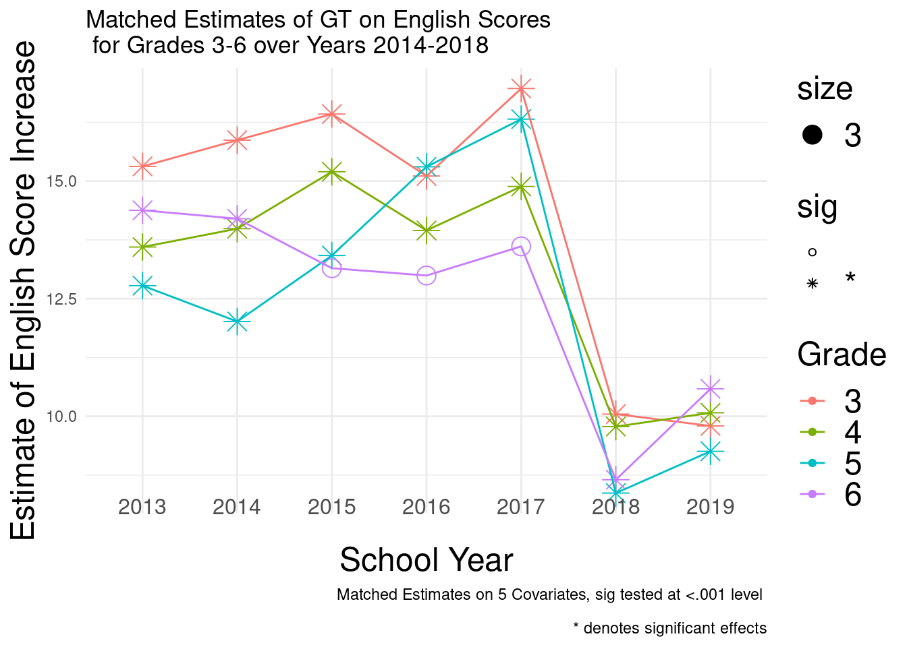

7 Simulation
7.0.1 Estimators
Three categories of estimators: estimators that model sample selection (propensity scores), estimators that model the outcome directly, and estimators that model both the sample selection and the outcome
IPW
BART
Outcome Modeling
Weight Trimming
Doubly Robust Methods
Interaction of weights with multi-level matching… how bias/precision is affected
Generalizability to different DVs (quant optimal/policy relevant)
grade_vector <- c("3", "4", "5", "6")
year_vector <- c('2013.y', '2014.y', '2015.y', '2016.y', '2017.y', '2018.y', '2019.y',
'2013.x', '2014.x', '2015.x', '2016.x', '2017.x', '2018.x', '2019.x')
empty_list <- list()
year_list<- list()
for (i in 1:length(grade_vector)) {
grade <- grade_vector[i]
df<- data.frame("year" = NA, "grade" = NA, "unmatched_regression_estimate" = NA, "p value" = NA)
for (b in 1:length(year_vector)){
year <- year_vector[b]
gy <- paste(grade, year)
data$outcome <-gsub(",","",data[,as.character(gy)],fixed = TRUE)
data <- data %>% filter(!is.na(outcome))
mod1 <- lm(as.numeric(outcome) ~ as.factor(treatment), data = data)
df[b,1]<- year
df[b,2]<- grade
df[b,3] <- mod1$coefficients[[2]]
df[b,4] <- summary(mod1)$coefficients[,4][[2]]
empty_list[[i]] <- df
}
}
dv_results <- as.data.frame(do.call(rbind, empty_list))7.0.1.1 DV results
df <- dv_results %>%
separate(year, c("Year", "Subject")) %>%
mutate(Subject = recode(Subject,
"y" = "English",
"x" = "Math")) %>%
mutate(sig = ifelse(p.value < .001, "*", " "))
df %>%
ggplot(aes(x= as.numeric(Year), y= as.numeric(unmatched_regression_estimate),
group = as.factor(grade), color = as.factor(grade))) +
geom_point() +
geom_line()